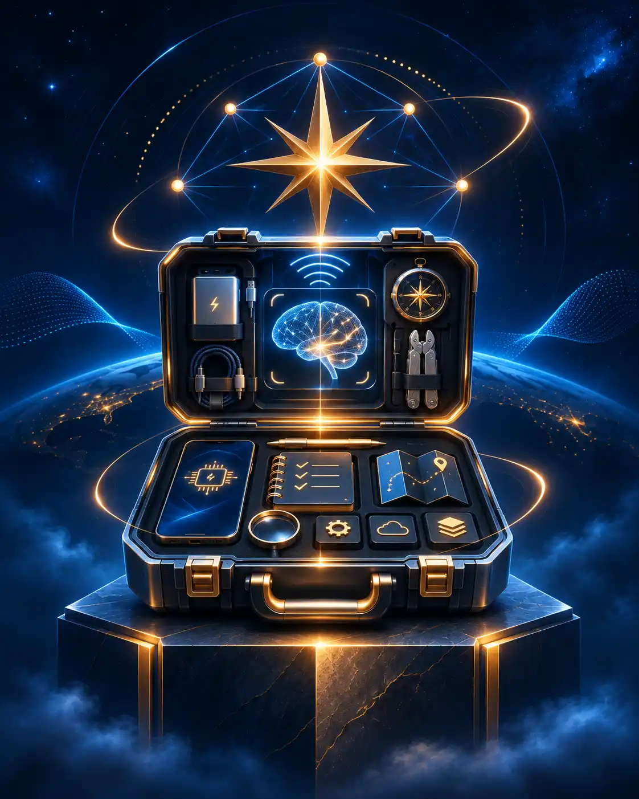

ESTRATÉGIA · CONTEÚDO · INTELIGÊNCIA ARTIFICIAL
06 / ARQUIVO EDITORIAL
Ideias que ampliam o alcance.
Um espaço para explorar o universo digital, compreender mudanças e encontrar caminhos para ir além.
Conteúdo feito com IA performa?
Pode performar, sim. O uso de IA, por si só, não dá bônus de posicionamento nem torna o conteúdo uma infração. O resultado depende de entregar informação útil, original, confiável e alinhada à intenção de busca.
A ferramenta não define o resultado. O valor que o conteúdo entrega, sim.
01 / MAPA DE CONTEÚDO
Cada assunto tem sua órbita.
O que o Google avalia?
O foco está na contribuição: informação original, análise, experiência demonstrável, fontes adequadas e uma resposta que ajude de verdade. O risco aparece quando muitas páginas são produzidas principalmente para manipular rankings e sem valor adicional — independentemente de terem sido feitas por IA ou por pessoas.
Mais páginas não significam mais relevância. O diferencial é acrescentar algo útil.
Oito caminhos para aprender, questionar, experimentar e acompanhar o que está mudando. Escolha uma frequência e comece por ela.
Autoridade digital
Estratégias, tutoriais e referências para construir uma presença forte e ser reconhecido por pessoas e mecanismos de busca.
Explorar categoria ↗Experiência e dados
Números, resultados e estudos de caso que mostram o que funciona, por que funciona e o impacto das decisões.
Explorar categoria ↗Fora de órbita
Cultura, comportamento, curiosidades e ideias que escapam do roteiro habitual do universo digital.
Explorar categoria ↗IA na prática
Ferramentas, recursos e processos de inteligência artificial explicados passo a passo, sem complicação.
Explorar categoria ↗
CAPA / 05Manual de sobrevivência
Guias diretos para resolver problemas, escolher ferramentas e lidar melhor com IA e tecnologia no dia a dia.
Explorar categoria ↗Mergulho profundo
Análises densas, contexto e reflexão para compreender assuntos importantes além da superfície.
Explorar categoria ↗Pitacos digitais
Tendências, previsões e leituras de cenário sobre os próximos movimentos do mundo online.
Explorar categoria ↗Radar de novidades
Notícias e atualizações que merecem atenção no universo digital, da tecnologia à comunicação.
Explorar categoria ↗02 / PRÓXIMA ÓRBITA
Uma boa ideia não precisa ocupar o universo. Precisa encontrar sua órbita.
Como medir o desempenho?
No Google Search Console, acompanhe se a página foi indexada, quais consultas geram impressões e cliques, a taxa de cliques (CTR) e a posição média. Depois combine esses dados com os registros de contatos, orçamentos, inscrições ou vendas que você já utiliza.
Meça visibilidade e resultado de negócio. Não avalie um conteúdo apenas pelo volume produzido ou pelo primeiro dia.